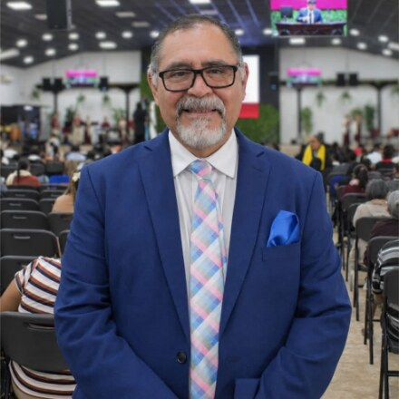

Ebenezer Antigua
Predicadores
Elige un predicador para leer sus enseñanzas: cada una tiene su video, un resumen y los versículos que se citaron.
 PastoraDébora de García11 publicadasÚltima: La evolución o involución de la conciencia · 22 nov
PastoraDébora de García11 publicadasÚltima: La evolución o involución de la conciencia · 22 nov AncianoJosé Carlos Méndez3 publicadasÚltima: Gobernados por la Paz · 20 nov
AncianoJosé Carlos Méndez3 publicadasÚltima: Gobernados por la Paz · 20 nov Pastor y MaestroRodrigo Ordóñez15 publicadasÚltima: La Luz · 17 nov
Pastor y MaestroRodrigo Ordóñez15 publicadasÚltima: La Luz · 17 nov
Profeta y PastorHugo García59 publicadasÚltima: La Oración · 15 nov AncianoEstuardo Soto3 publicadasÚltima: Los ojos del interior · 23 oct
AncianoEstuardo Soto3 publicadasÚltima: Los ojos del interior · 23 oct PastorGustavo Hernández1 publicadaÚltima: Escalando los muros · 18 octJBMaestroJimmy Berganza1 publicadaÚltima: El deleite integral · 31 may
PastorGustavo Hernández1 publicadaÚltima: Escalando los muros · 18 octJBMaestroJimmy Berganza1 publicadaÚltima: El deleite integral · 31 may